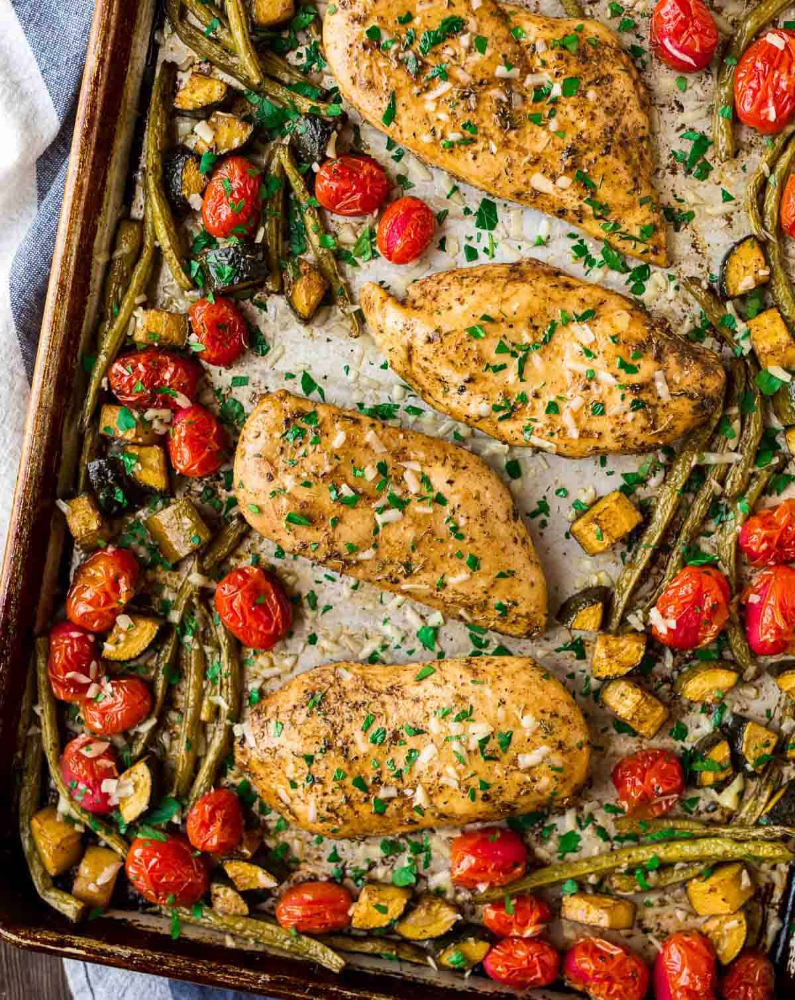

Italian Chicken

Description
This simple recipe requires minimum skill, equipment and
effort. Don't let the simplicity fool you, however, as this dish will quickly become a favorite.
All you need is some chicken, italian dressing, and a crockpot and you are ready to dine like the
citizens of Rome. This is a great starter recipe for novice cooks and busy parents alike.
Ingredients
- 4 Chicken Breasts
- 16 oz Italian Dressing
- 1/2 cup Parmesan Cheese
Steps
- Mix parmesan and dressing in a bowl
- Place chicken breasts in Ziploc Bag
- Pour dressing and parmesan mix into bag and let marinate for 30 minutes to a day
- Place chicken in CrockPot on low for 8 hours
- Remove chicken from CrockPot and make sure internal temperature is at least 165 degrees Farenheit